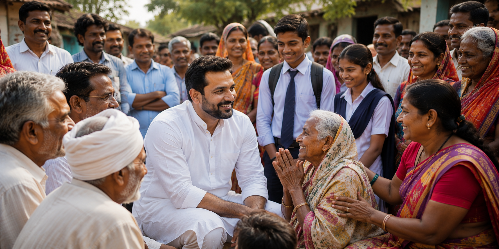
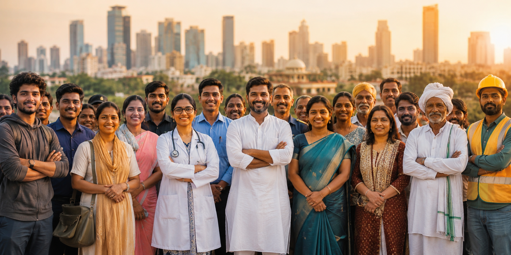
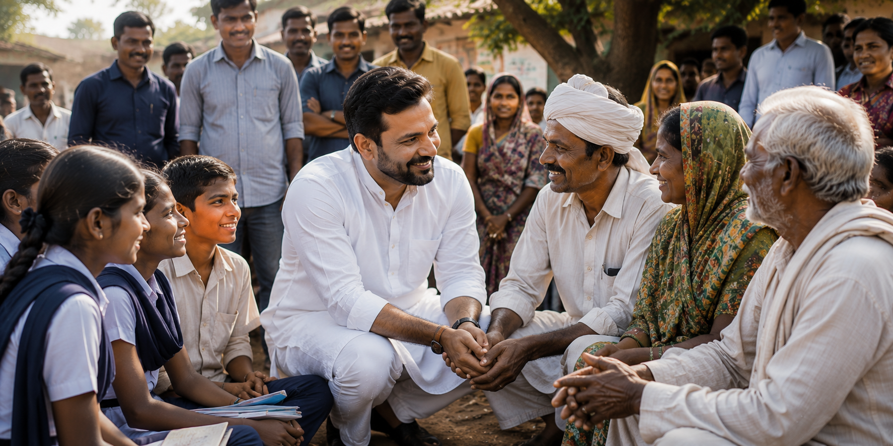

Sanay Chatrapati Shasan paksh is a registered political party headquartered in juhu, mumbai, Maharashtra. Inspired by the governance principles of Chhatrapati Shivaji Maharaj and Rajmata Jijau, the party is committed to good governance, social empowerment, transparency, and sustainable development.
Our mission is to create people-centric policies that promote equality, progress, and inclusive growth while strengthening democratic values and public participation.
```To build a strong, progressive, and inclusive India where every citizen has equal opportunities, every voice is respected, and development reaches every section of society.
```